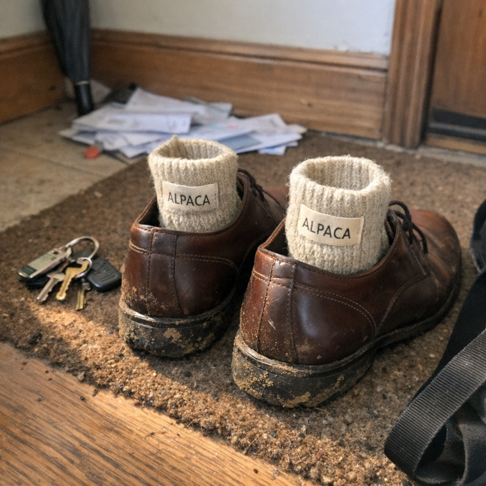

It was never about the fiber. It was about who the fiber was designed for.
You did the research. You found the "best" fiber. You paid for it.
But alpaca fiber evolved at 15,000 feet in the Andes. For an animal standing still in freezing temperatures.
Merino wool evolved for sheep grazing in Scottish rain. For livestock that never needs to get into a taxi.
Those fibers were optimized for problems you don't have.
Standing still all day. Extreme cold. No washing machines.
Your life looks different. Your socks need to survive motion, heat, moisture, and a dryer.
The variable isn't which fiber sounds best. It's which fiber was designed for a human schedule.
That's the variable the premium sock industry doesn't mention.
5 reasons you shouldn't buy premium wool or alpaca socks: {url}
See more

👞
The Commute vs The Andes
Run generate_stefan_images.py to create
🎨
Raw iPhone photo taken to show a friend. Premium alpaca socks (label partially visible saying 'alpaca' or similar) stuffed into leather business shoes sitting on doormat by front door. Keys on floor nearby, umbrella leaning against wall, messenger bag strap visible. Morning light from side window creating long shadows. Background messy - shoes slightly muddy, doormat dirty, mail on floor. This is NOT a content photo - this is 'designed for mountains going to an office' energy. Slight blur from morning rush, phone held low near ground to capture shoes, tilted angle.
matandvics.com
It Was Never About the Fiber
It was about who the fiber was designed for.